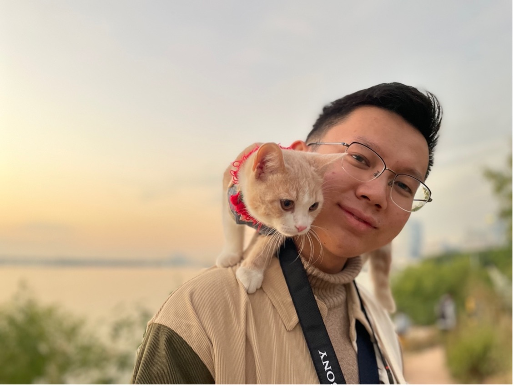
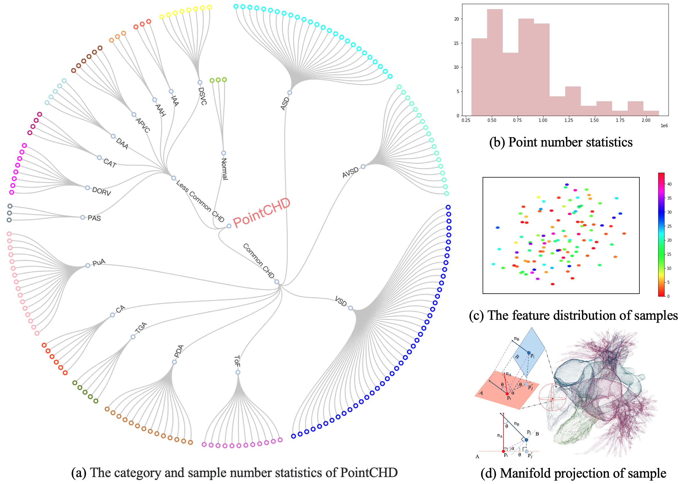
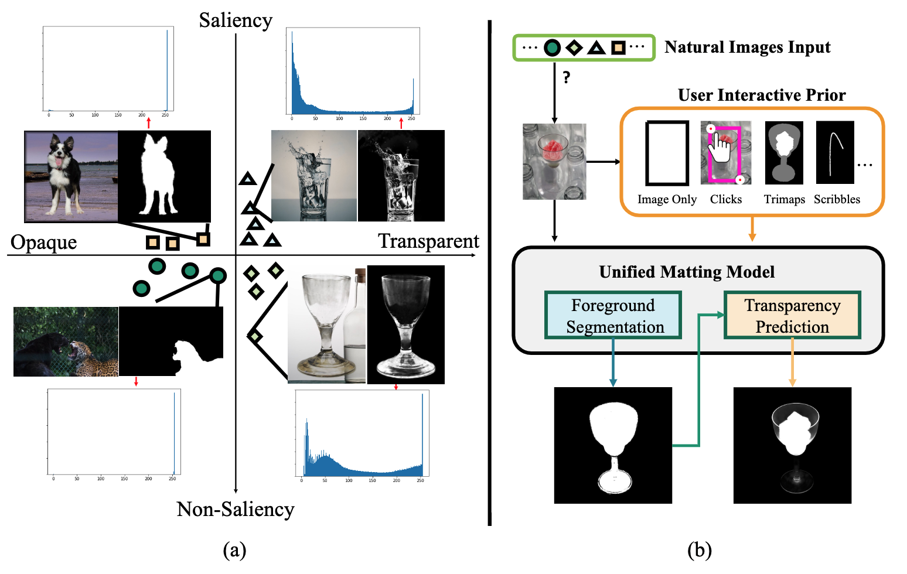
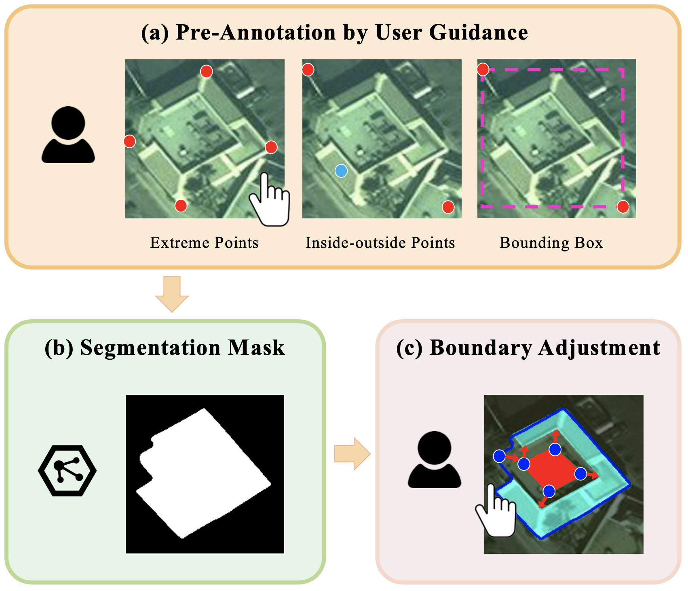
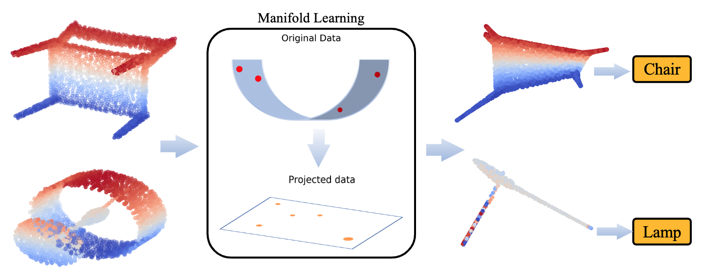
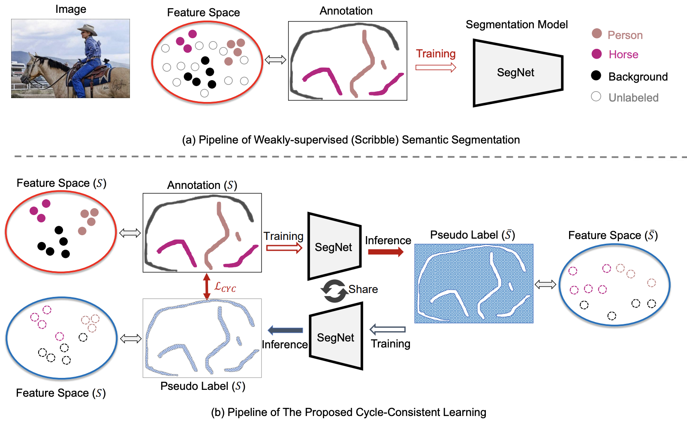
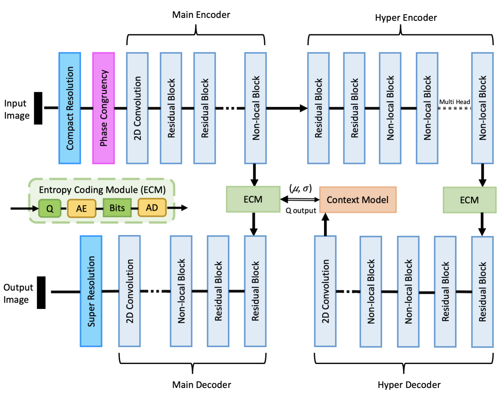
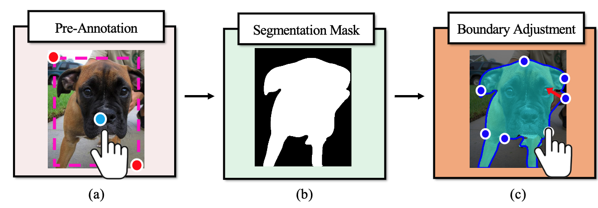

Dinghao YANG 杨丁豪Algorithm Engineer, Alibaba CloudMachine Learning Platform for AI (PAI)
|
 |
Biography
I am an algorithm engineer at Machine Learning Platform for AI, Alibaba Cloud. I received the M.S degree from the School of Electronic and Computer Engineering, Peking University, in 2023, and the B.E. degree from the School of Software Engineerning, Tongji University, in 2020. I used to be a research intern at Data and Computing Platform, SenseTime Research, during 2020-2022, supervised by Bin Wang and Weijia Li.
My research interests include point cloud analysis, image segmentation/matting, and neural network compression.
You can find my Curriculum Vitae here.
Experience
- Jul.2023 - Now, Algorithm Engineer, Alibaba Cloud
- Oct.2020 - Jan.2022, Research Intern (Computer Vision), SenseTime Research
- Oct.2019 - Jul.2020, Research Intern (3D Vision), Peng Cheng Lab
- Sep.2019 - Sep.2019, Research Intern (3D Vision), Megvii Research
Publications
Preprint Papers
|  | PointCHD: A Point Cloud Benchmark for Congenital Heart Disease Classification and Segmentation
Dinghao Yang, Wei Gao Under Review [PDF] [Code] |
|  | Unified Interactive Image Matting
Dinghao Yang, Bin Wang, Yiqi Lin, Conghui He, Weijia Li Under Review [PDF] [Code] |
|  | Exploring the User Guidance for More Accurate Building Segmentation from High-Resolution Remote Sensing Images
Dinghao Yang, Bin Wang, Conghui He, Weijia Li Under Review [PDF] [Code] |
|  | Exploiting Manifold Feature Representation for Efficient Classification of 3D Point Clouds
Dinghao Yang, Wei Gao, Ge Li, Hui Yuan, Junhui Hou, Sam Kwong ACM Transactions on Multimedia Computing, Communications and Applications(TOMM) [PDF] [Code] |
|  | Cycle-Consistent Learning for Weakly Supervised Semantic Segmentation
Bin Wang, Yu Qiao, Dahua Lin, Dinghao Yang, Weijia Li The 3rd International Workshop on Human-Centric Multimedia Analysis (HUMA), 2022 [PDF] |
|  | Low-rate image compression with super-resolution learning
Wei Gao, Lvfang Tao, Linjie Zhou, Dinghao Yang, Xiaoyu Zhang, Zixuan Guo IEEE/CVF Conference on Computer Vision and Pattern Recognition Workshops(CVPRW), 2020 [PDF] |
Projects
|  | Intelligent Annotation for SenseBee
I am principally responsible for the interactive data annotation algorithms for SenseBee, the data platform for SenseTime AI research. We propose and deploy deep learning-based algorithms to accelerate manual data annotations (i.e. image segmentation, image matting, 3D object detection). [Code] |
| OpenPointCloud
I participate in OpenPointCloud, an open-source algorithm library of deep learning-based point cloud compression & processing, mainly contrbute in the manifold learning-based point cloud representation learning method. [Code] |
Awards
- Award for Scientific Research, Peking University. 2022.
- 2nd place at Streaming Detection Challenge, Full Stack Track! (CVPR 2021 Workshop)
- Excellent graduate of Shanghai. 2020.
- Shanghai Scholarship. 2019.
- Excellent Leader of Microsoft Student Club, MSRA. 2018.
Academic Activities
- Journal reviewer: TCSVT
- Conference reviewer: ACM MM 2022, CVPR 2022, ECCV 2022, ICCVM 2023, ICDIP 2022, IJCAI 2022